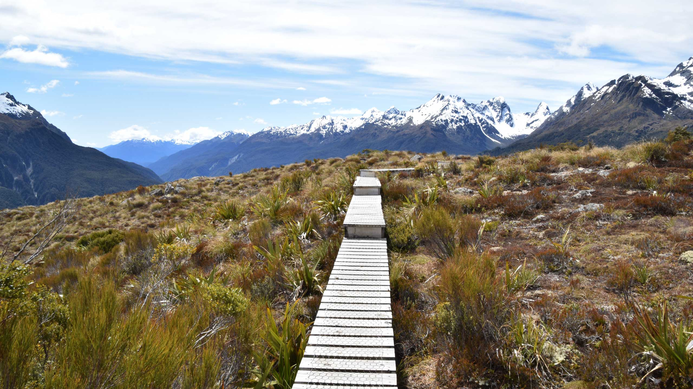
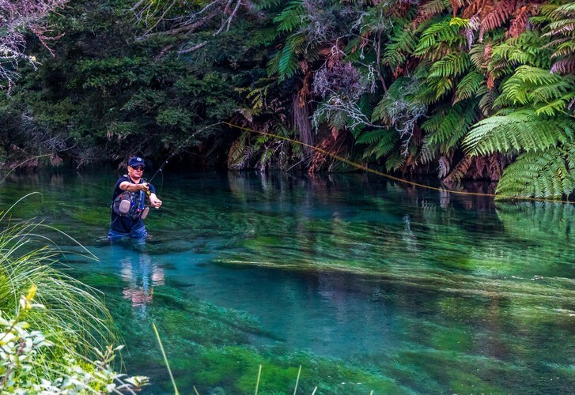
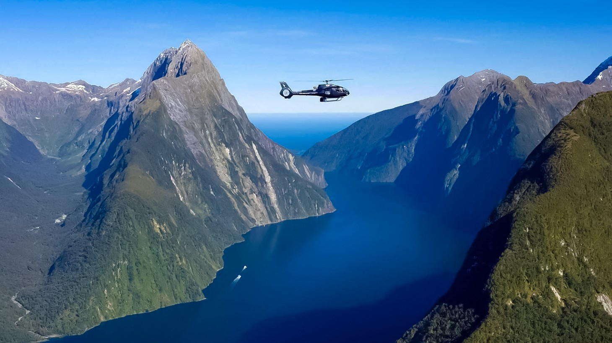

What can I do?
Visitors to Fiordland have a wide range of attractions to choose from, including all of the following activities:
Tramping

Fiordland National Park has a world wide reputation for its walking tracks which are amongst the best in the world, and some of the finest scenery Fiordland has to offer can be seen from the following tracks.
Milford Track:
One of New Zealand's most popular walks, the 53.5km Milford Track was once described as the finest walk in the world
Routeburn:
The Routeburn track traverses 33km of Mount Aspiring and Fiordland National Parks and extends between the head of Lake Wakatipu and the Milford road
The Kepler Track:
A 60 kilometer circular track travelling through spectacular scenery in Fiordland National Park
Fishing

Fiordland has a range of fishing opportunities to suit all anglers, with lakes and rivers
offering good numbers of brown and rainbow trout.
There is water to suit anglers of all abilities, including Lake Henry in the Ivon Wilson Park in
Te Anau which is specially stocked for children to try angling.
Boat Trips

The deeply carved glacial valleys of Fiordland have created spectacular landscapes ideal for experiencing by boat,
whether it be a fishing trip on one of the lakes, a scenic cruise in one of the fiords, or an exhilarating jet boat ride up a river.
Scenic Flights

What better way to experience Fiordland’s grandeur than to view this stunning landscape from the air.
mode of transport not available to these early visitors, a scenic flight over Fiordland allows access to breathtaking views overlooking a sea of peaks,
lakes, and spectacular fiords.